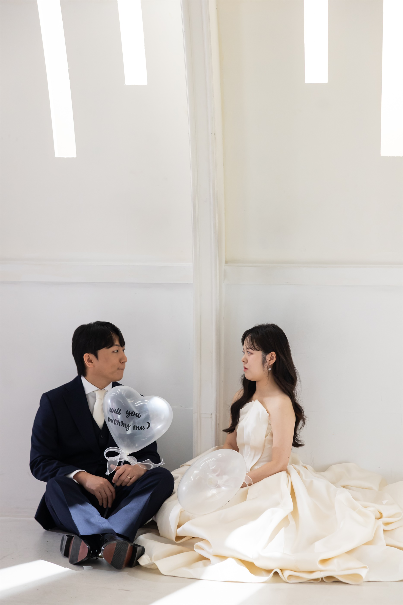
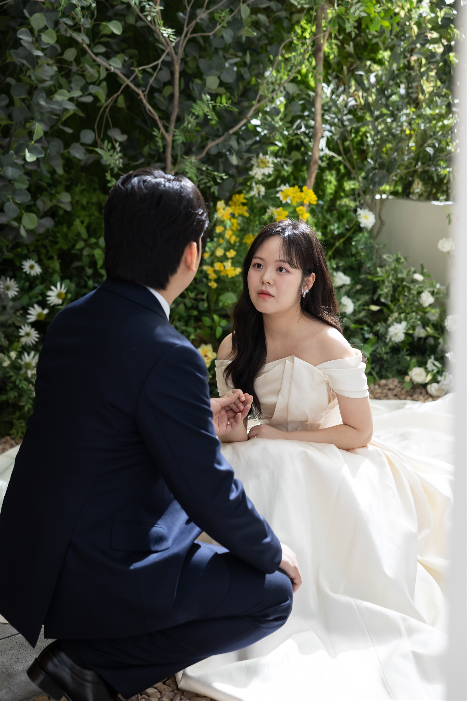
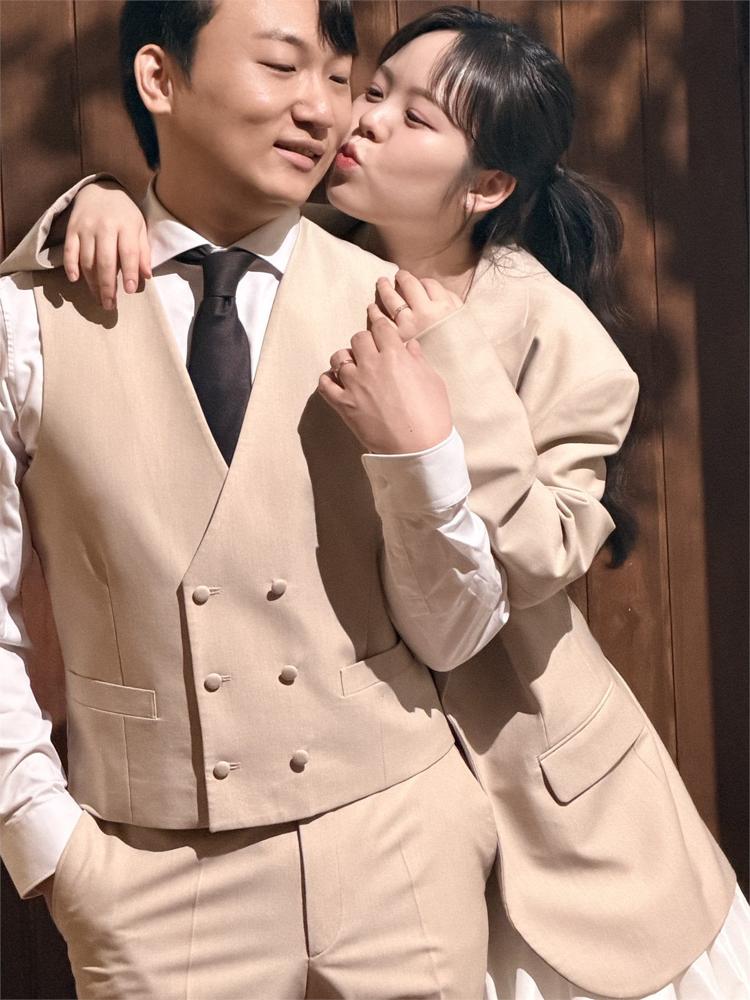

예비신랑
최영찬
차분하고 책임감 있는 성향으로, 안정적인 일상과 가족 중심의 가치를 중요하게 생각합니다.
- 직업: IT 기획
- 성향: 신중함, 꾸준함, 배려
- 요즘의 관심: 건강한 생활 습관, 여행 계획
두 사람의 계절이 천천히 하나의 약속이 되었습니다.
아래로 천천히 내려오시면 두 사람의 계절과 약속이 이어집니다.


A Little Note
서로를 향한 마음이 오래도록 잔잔하고 단단하게 이어지길 바라는 마음으로, 오늘의 첫 인사를 준비했습니다.
화려한 표현보다 오래 남는 다정함을 담아, 두 사람의 이야기를 차분히 정리했습니다.
About Us
예비신랑
차분하고 책임감 있는 성향으로, 안정적인 일상과 가족 중심의 가치를 중요하게 생각합니다.

예비신부
밝고 섬세한 성향으로, 대화와 공감을 바탕으로 편안한 관계를 만들어가는 것을 중요하게 생각합니다.
Our Story
공통 관심사와 대화의 결이 잘 맞아, 편안한 친구 같은 관계로 시작했습니다.
일과 휴식, 가족에 대한 태도에서 비슷한 방향을 가지고 있다는 점을 알게 되었습니다.
생활 계획과 준비 과정에 대해 충분히 상의하며 현실적인 방향을 함께 정리했습니다.
오늘의 만남이 두 집안 모두에게 편안하고 기쁜 기억으로 남기를 바랍니다.
Moments



Shared Values
01
서로의 일과 생활 방식을 바꾸려 하기보다 존중하며 조율하는 태도를 중요하게 생각합니다.
02
작은 약속도 가볍게 넘기지 않고, 꾸준한 대화와 행동으로 신뢰를 쌓아왔습니다.
03
화려함보다 안정적인 생활과 건강한 관계를 지향하며, 현실적인 계획 속에서 준비하고 있습니다.
Future Plans
서로의 일과 생활 리듬을 존중하면서, 균형 있는 일상을 만드는 것을 가장 우선으로 생각하고 있습니다.
두 집안 모두에 예의를 갖추고, 자주 안부를 나누며 편안한 관계를 쌓아가고 싶습니다.
일정과 예산은 무리하지 않는 선에서 차근차근 상의하며 준비해 나가려 합니다.
Closing Note
오늘의 만남이 두 가족에게 오래도록 포근한 기억으로 남고, 앞으로의 시간 역시 서로를 아끼는 마음으로 아름답게 이어지기를 바랍니다.
최영찬 · 이승현 드림